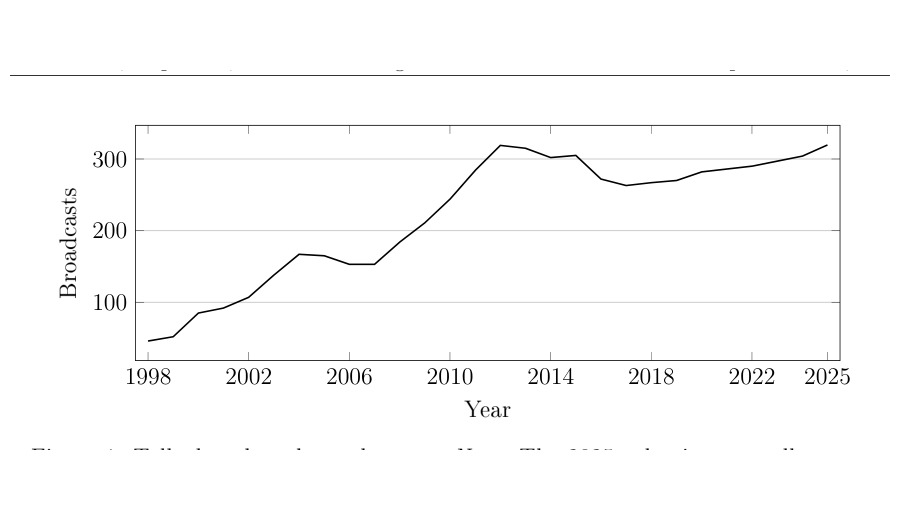

Talk Shows, Populism, and the Far Right
Working paper, September 2026
Abstract
Broadcast media firms influence political competition by deciding which actors gain access to
prominent public platforms. This paper studies how appearances by different parties on political
talk shows shape party support and economic expectations, with particular attention to populist
parties and the far-right Alternative for Germany (AfD). It combines the newly constructed
Talkshow Dataset of Germany (TDOG), covering more than 6,000 political talk-show episodes from
1998 to 2025, with more than 3.3 million daily forsa survey responses. The results provide
high-frequency evidence that political visibility can generate immediate and heterogeneous shifts
in public opinion while media gatekeeping decouples platform access from electoral strength.